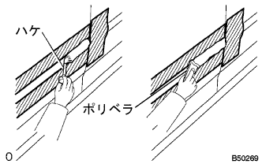
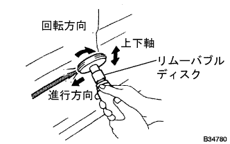
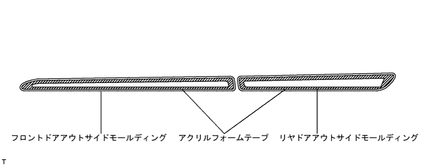
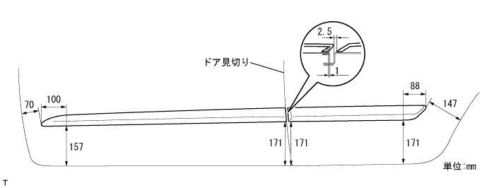

Outside Moulding Installation |
| 1. Install Front Door Outside Moulding LH |
 |
Clean Vehicle Installation Surface (When Using Solvent)
Apply protective tape right up to the edge of the acrylic foam tape remaining on the body.
Using a plastic spatula or brush, apply Remover Bond 7 as thickly as possible to the acrylic foam tape remaining on the body.
Heat the acrylic foam tape remaining on the body using an infrared lamp or equivalent.
Scrape off the acrylic foam tape remaining on the body using a plastic spatula.
Apply Remover Bond 7 again to the acrylic foam tape remaining on the body.
Heat the acrylic foam tape remaining on the body using an infrared lamp or equivalent.
Rub off the acrylic foam tape remaining on the body with a shop rag or equivalent.
 |
Clean Vehicle Installation Surface (When Using Tape Removable Disc)
Apply protective tape right up to the edge of the acrylic foam tape remaining on the body.
Set 8 discs in the holder, and install the removable disc to an air drill or electric drill.
Wearing protective goggles, scrape off the acrylic foam tape.
Clean the bonding surface with white gasoline.
Clean Outside Moulding (When Reusing Moulding)
As with the vehicle installation surface, remove the acrylic foam tape using solvent or a tape removable disc.
Install Outside Moulding
Apply acrylic foam tape to the back of the moulding. (When reusing moulding)

Heat the moulding and body surface.
Peel off the release paper of the acrylic foam tape without touching the adhesive surface.
Set the front door outside moulding on the vehicle, and install it by pressing it firmly with a roller.

| 2. Install Rear Door Outside Moulding LH |
Install the rear door outside moulding LH in the same way as the front door outside moulding LH.